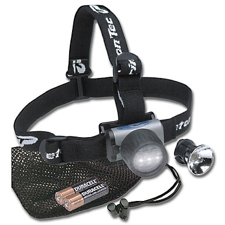
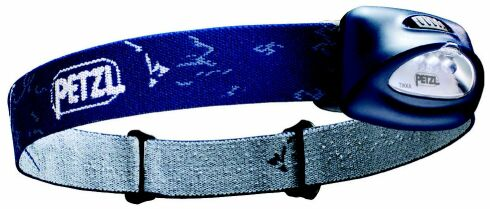
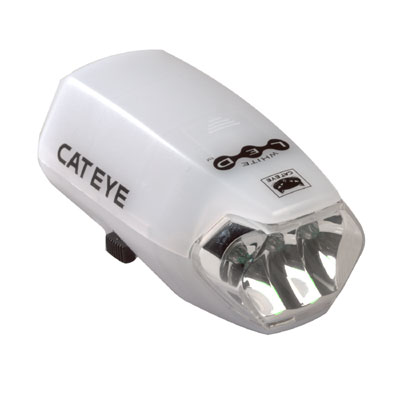
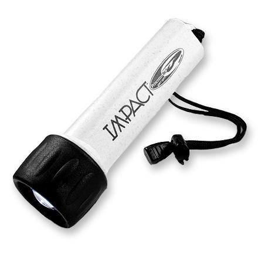
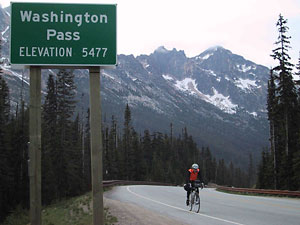

Volume 7 Issue 1 - January/February 2002
2002 Brevet Schedule
2002 Season Introduction
Night Riding and LED Headlights
A Rookie Looks Back
RUSA Domestic Events
SIR 2002 Flèche Northwest
Wool Jersey Update
Road Snippets

We'd love to have memberships renewed before the 200 km (March 23) to reduce stress on the start of that ride. You can get a Membership Application/Renewal on-line and send it to Anne Marie McSweeny, 19167 NE 43rd Court, Sammamish, WA 98074, 425-868-6796. Email: membership2004@seattlerandonneur.org
SIR Email List
For those of you on-line, join in the SIR email list! It's a great way to share info, ride schedules, car-pooling to events and training with other SIR members. To get on go to http://www.phred.org/mailman/listinfo/sir. It's easy!
SIR Volunteers Needed
SIR members are encouraged to volunteer at Bike Expo (March 1-3) to answer questions and hand out flyers. Mark will coordinate volunteers and you can contact him at RBA@seattlerandonneur.org or (206) 612-4700. Volunteers and flyers will be at the Sammamish Valley Cycle booth.
SIR members wishing to help out on any of the brevets, please contact the organizer directly and offer your support. Running a double series this year will be easier if we all pitch in!
| Date | Distance | Organizer | Route |
|---|---|---|---|
| Mar 2 | 100 km Populaire | Mark Thomas | Route from the Woodinville Red Hook Brewery. Listed as a Cascade ride as well, Duane Wright will be the Cascade ride leader. |
| Mar 23 | 200 km | Greg Cox | 2001 route with slight modifications. |
| April 13 | 300 km | Bill Dussler | Hood Canal loop from 2001. |
| April 26-28 | Flèche Northwest | Peter McKay | Semi-ah-moo finish. |
| May 11-12 | 400 km | Ken Carter | 3-pass route unless passes are unsafe; in that event, Ken is considering an extension of the Whidbey Island/Lake Cavanaugh 300 km route. |
| June 1-2 | 600 km | Wayne Methner | Either the North Cascades highway look or a route over White, Blewett, and Stevens passes. |
| Aug 3 | 200 km | Terry Zmrhal | Out and back from Bremerton to Union and then partway up the Hood Canal and back. |
| Aug 24 | 300 km | Terry Zmrhal | Bremerton-Quilcene-Union-back (via Bainbridge). |
| Sept 14-15 | 400 km | Mark Thomas | Some variation on Ron Lee's 400 km route to Sumas and Birch Bay, with the North Cascades 600 km tacked on to make the 1000 km route. |
| Sept 14-17 | 1000 km | Mark Thomas | See 400 km route above. |
| Sept 21 | 100 km Populaire | Kent Peterson | Repeat of last year's climbfest. |
| Oct 6 | 600 km | Still need volunteers! Contact Mark Thomas. | Olympic Peninsula route from 1999. |
By Mark Thomas
Welcome to a new season of randonneuring. I've already seen many old friends and some new faces on Terry's training rides, other rides, and in the bike shop. We are looking forward to a great year at SIR. This will follow on our successful 2001, where we finished 9th among all Randonneur clubs internationally (145 total) for brevet results. Audax Club Parisien ranks each club according to finishers in brevets sponsored by the club, with 2 points for each 200 km finisher, 3 points for each 300 km finisher, etc. Our 404 points put us behind only Melbourne Victoria (Australia), Davis, Audax UK, BC Lower Mainland, West Palm Beach, Boston, Wash DC, and Union Audax Tournai (Belgium).On the agenda for 2002 are two brevet series. We have decided to add a second full brevet series that starts in August. We are hoping to attract riders who are looking for the next challenge after training for an STP one-day ride, a RAMROD, or a similar summer goal. I'm sure you've seen that look of disbelief when you suggest that someone come out and ride 250 miles in May on a 400 km brevet over multiple mountain passes. We hope that some of these riders may be attracted enough by a later series to become regular participants in time for Paris-Brest-Paris 2003. We had 22 entrants for the last PBP in 1999, and it would certainly be great to have a larger Seattle team next year.
The first brevet series will be the usual challenging stuff. Although we're still working on the routes, they are shaping up to be good climbing training. Some of us are trying to prepare for the Rocky Mountain 1200, after all! The 200 km route will probably be a repeat of last year's spring route, with nice climbs into Eatonville and out of the Green River Gorge before a nice feast at Greg Cox's house. The 300 km will be a Hood Canal loop featuring the infamous Tahuya hills - if you rode our 300 km in 1998 or 2001, you know what I mean. The 400 km will probably be a return of the 3-pass ride over Stevens, Blewett, and Snoqualmie passes. The 600 km may traverse four - count 'em, four - passes, heading south to go over Cayuse and White Passes and then heading north to pick up Blewett and Stevens, with lots of fabulous riding in-between.
The second series will be a little easier and a little more supported. The 200 km and 300 km will start from the Seattle ferries and traverse nice roads around the Hood Canal and on the Olympic Peninsula. The 400 km will stay east of the Sound and west of the Cascades with a ride to Arlington, Rockport, Sedro-Woolley, La Conner, Chuckanut, Bellingham and points between. For those looking for greater challenge, a 1000 km brevet will be run at the same time, combining the 400 km route with a 600 km North Cascades loop (Stevens, Washington, and Rainy Passes). The final brevet will be a 600 km on the Olympic Peninsula similar to the ride in 1999.
But wait, there is more. 100 km Populaires are planned for March and September. Our flèche will end, like last year, with a nice brunch at Semiahmoo resort near Blaine. We are also considering a new RUSA-sanctioned ride called a "Dart" - basically a half-flèche, routes of 180 or more kilometers to be finished in 12 hours and converging on a gathering point. This is tentatively set for September 7th. I'd be thrilled to have some help organizing this ride and, in particular, settling on the destination, which should be someplace where we can have some fun afterwards and also a place that can be reached by a variety of routes.
"That all sounds great," I hear you cry, "but how can I help?" And I thought you'd never ask. Prime volunteer opportunities are to help with a presence at the Bike Expo on 3/1-3, to run or help with the fall 600 km (and the Dart, as mentioned above), and to assist any of the brevet organizers. Please, please, please. OK, I'm begging.
Hope to see all of you at the 100 km Populaire on March 2nd at the Red Hook brewery in Woodinville. Bring new recruits!
By Kent Peterson
One of the challenges randonneurs face is night riding. While it is theoretically possible to complete the various brevets entirely in daylight, virtually all randonneurs spend some brevet time in darkness and the subject of bicycle lights is a frequently debated subject of conversation in many randonneuring clubs. While there are probably as many solutions to the lighting problem as there are randonneurs, I'm not going to discuss all the options here. Interested readers are encouraged to explore the many options available in systems using halogen bulbs, linear voltage regulators, various battery packs and/or generators. A wide range of systems have been successfully used in events like PBP and BMB and quick web search should reveal a wealth of information.The question I intend to answer here is this: Can the current generation of LEDs provide sufficient light for randonneuring or bicycle commuting applications? The answer to this question is ultimately a very subjective one, since each rider has his or her own definitions of what constitutes "sufficient light" but for me the short answer is "yes". The long answer will constitute the bulk of this report.
Light Emitting Diodes (LEDs) have been around for years and while the red LEDs are almost universally used in bicycle tail lights, it has only been in the past few years that newer generation white LEDs have been available for use in flashlights, head lamps and bicycle front lights. These LEDs still aren't capable of putting out the amount of light that a halogen or krypton bulb can produce, but they do offer several advantages over a traditional filament bulb.
LEDs are solid-state devices and under normal conditions they virtually never burn out. Over-volting an LED will destroy it, but this doesn't happen with a properly designed circuit. Unlike filament bulbs, LEDs are unaffected by jarring shocks, such as those encountered in riding over cobblestones. Finally, LEDs draw very little power. This allows the creation of small lights that have very long run-times. For example, my helmet light, a Princeton Tec Matrix, uses two AA cells to drive three white LEDs. With a fresh set of alkaline batteries, the light will run for 40 hours. With lithium AAs, the run time is over 100 hours!
 I have used the Princeton Tec Matrix head lamp for the past two years and I've found that it is very good as a helmet light. It casts good light for reading cue sheets and lighting road signs and route markers. It also provides sufficient light for repairing a punctured tire or making other roadside repairs. It is also very good for catching the attention of motorists at intersections. The fact that the beam from a helmet light goes where you point your gaze makes it a very useful addition to a night rider's lighting system.
I have experimented with other helmet lights, both incandescent and LED and find myself always returning to the Matrix. Higher powered incandescent systems require external battery packs, suffer from shorter run-times or both. Smaller LED head lamps, like the Petzl Tikka or Zipka are lighter and have decent run-times but several factors make me favor the Princeton Tec Matrix over the Petzls. First, the Matrix casts a better beam. Second, the Matrix uses a solid-state circuit to increase the voltage from 2 AA cells to power the three LEDs, whereas the Petzls use 3 AAA cells to power their three LEDs. This leads to problems that I'll discuss in detail a bit further on. Third, the Matrix has a pivoting mount that I find more useful that the Petzl's fixed angle. Fourth, the Princeton Tec is far more rugged and better sealed than the Petzl (although I have never had any problem with the Petzl failing and I've used my Tikka on some very wet rides).
 One of the main strengths of the Petzl lights is their extreme light weight. Unfortunately while the Petzl lights weigh less, their unsophisticated circuitry means that the brightness of the light drops off as the batteries drain. Alkaline batteries have a sharply sloped discharge curve, so this means that for much of the life of the batteries, the Petzls are putting out less light than the LEDs are capable of emitting. The Princeton Tec Matrix, on the other hand, puts out strong, steady light for almost the entire life of it's batteries. The problem with the Petzls would be far less if lithium AAA cells were available. Lithium cells have a discharge curve that is fairly flat for the bulk of their life before ending in a very steep drop. Using Lithium cells to power simple LED circuits gives far better light for the bulk of the time that running the same simple circuit with alkaline cells. Unfortunately, to the best of my knowledge, no company is currently manufacturing lithium AAA cells.
In the autumn of 2001 Cateye began producing the HL-EL100 bicycle headlight. Like the Petzl Tikka, the HL-EL100 lacks any sophisticated LED driver circuitry. The lamp powers it's three white LEDs directly off 4 AA batteries with a 15 ohm resistor as a current limiter. However, since the Cateye uses AA cells, lithium batteries can be used in the light. While the lithium cells are more costly than alkalines, their better discharge curve and lighter weight make them a good choice for powering this lamp.
 In December of 2001 I began an experiment to use LED lights for my bicycle commuting and randonneuring training rides. My forward bike lighting consisted of and Cateye EL-HL100 paired with a Cateye HL-MC200 Micro Halogen II 2.4 watt halogen light. I also had the Princeton Tec Matrix mounted on my helmet. My intent was to use the EL-HL100 as my primary light and only turn on the HL-MC200 when I felt I needed additional light. I anticipated that I would feel the need for more light in situations such as high speed descents or particularly rainy nights.
Many people approach night riding from an absolute perspective and seem intent on reproducing the visibility they have in broad daylight. I've often heard people say things like "I need a 35 Watt system because I ride a lot on unlit country roads." In my experience, the unlit country road scenario is actually one in which a minimal light can be quite adequate since the human eye can adapt to the dim conditions. Urban riding, on the other hand, tends to require more powerful lights, since oncoming traffic and other light sources interfere with the eye's night-adaption mechanisms. In the urban environment I've found that a cycling cap is one of my best pieces of night-riding equipment. With the cap tucked under my helmet and the brim shielding my eyes, I can avoid the worst of the glare from oncoming vehicles.
Both the Cateye EL-HL100 and the translucent-cased HL-MC200 allow some of their light to spill out through their cases. In the case of light spilling out the sides, there may be some marginal added safety offered by this light, but the light spilling out the top of the light does nothing but interfere with night vision. On my lights, I made the top of the lights opaque with black electrical tape to eliminate this top glare. Also the mechanism holding the case of the lights together is a bit fragile, as is the single screw holding the light body to the mounting clamp. I made some thick rubber bands by cutting up an old bicycle inner tube and I use these bands to keep the lights and clamps secure. Finally, Zach Kaplan has reported that he's had problems with water accumulating in his EL-HL100. I ride a lot in the rain and haven't had this problem, although the above mentioned modifications make the lights better sealed than unmodified lights. Zach also had his EL-HL100 mounted upside-down and this may contribute to water accumulation problems.
Throughout December of 2001, I rode with my dual Cateye plus Matrix lighting system. Every work day I'd commute for 1/2 hour in the dark going to work and 1/2 hour in the dark coming home from work along suburban and urban roads. In addition, several nights a week I'd add in a night loop around Mercer Island, Washington or around Lake Sammamish. On the weekends, I'd do longer rides that would begin at my suburban home at 3:00 AM and head out into the wooded country roads heading north and south of Issaquah. In the month of December, I logged 30 hours of night riding. I used the halogen light for a total of 20 minutes in that month, while I used the LED lights for the full 30 hours. I never had to replace the batteries. I was not run over by cars. I had no close calls.
I did descend a bit more slowly in unfamiliar terrain and I did find that the beam cast by the Cateye HL-EL100 to be pretty diffuse. The beam cast by the white LEDs is quite reminiscent of moonlight and the LEDs cast a 20-degree beam that doesn't carry very far. While I found the HL-EL100 to be adequate, it was far from ideal.
In late December of 2001, Dr. Marty Goodman posted a note to the Bike Current newsgroup in which he described modifications he'd made to a Cateye HL-EL100. Marty had replaced the three 6,000 mcd white LEDs with three 10,000 mcd green LEDs. While these green LEDs draw the same power as the white ones, they put out more light. I quickly wrote to Marty to see if I could get him to make me up a light. He generously agreed in exchange for a very reasonable fee and the promise that I'd write up a report of my findings. This web page is that report.
Since the HL-EL100 and the HL-MC200 use basically the identical case and mount (it differs only in the color), when I got the Green-EL100 I mounted it on my bike in place of the seldom used HL-MC200. I loaded fresh lithium AA batteries into both the White-EL100 and the Green-EL100 and since January 1, 2002, I've been using these lights in tandem as my bicycle lights.
Several factors combine to make the Green-EL100 superior to the stock White-EL100. First off the LEDs really do seem to be putting out more light. 10,000 mcd is more than 6,000 mcd and this is a noticeable difference. Second, the white LEDs have a 20 degree viewing angle while the green LEDs have a 15 degree viewing angle. This means that the green LED projects a nicer, more focused beam. Finally, the frequency of the green light, 525 nanometers, is right between the scotopic and photopic peaks of human eye perception. The scotopic peak (555 nm) is wavelength of light where the cones in the human eye are the most sensitive. The cones are used primarily in daylight for distinguishing fine detail in an image. The rods of a human eye, on the other hand are most sensitive to light at photopic peak of 505 nm. Rods are more numerous than cones (you have about 120 million rods in your eye, but only 6 to 7 million cones) and while rods don't distinguish color, they do provide you with your night and peripheral vision.
This raises the question, doesn't it seem weird to ride around with everything lit up green? The answer is no, because night vision is colorblind. As the Moody Blues observed:
It's actually not the moon that removes the colors from our sight, it's the physiology of the human eye. Studying the physiology of the eye explains another phenomena many night riders have noted: sweeping your gaze and not looking directly at the item lets you see things better at night. Jack Eason explained to a friend of mine how he'd learned that trick back in the war and I'd always wondered why this was so. It turns out that while the cones have their highest density at the center of the retina, the density of the rods peaks a few degrees off center. So in low light conditions, your best vision is not at your center of focus.
At the time of this writing, I've been riding with the Green-EL100 and White-EL100 for three weeks worth of night riding (about 22 hours of riding in darkness). The first night I was out a man walking his dog on Mercer Island commented "Wow, that's some light!". I'd been concerned that perhaps just having a green light up front would confuse drivers, but I always ride with the green and the white light on simultaneously and I also have the white Matrix helmet lamp on as well. As was the case in December, I've had no close calls with any drivers, potholes or nocturnal animals. With the Green-EL100, I can see further and I've descended hills at speeds up to 50 kph.
I'd pretty much decided that the dual Cateye system (one white and one green) would be my head lights of choice but LED technology keeps moving forward and companies continue to produce new and interesting products. One product that consistently gets good reviews is the Princeton Tec Impact flashlight.
 The Princeton Tec Impact uses four AA cells to drive a single white LED. I haven't opened up the LED assembly, but I don't think the light has any sophisticated driver circuitry. To get the best performance from this light, I've been running it with lithium batteries. Princeton Tec claims the Impact will run for 150 hours on 4 alkaline AA cells, with lithium cells the light will probably run for twice that time. Like the other Princeton Tec products I've seen, the Impact is very well made and weatherproof.
The Impact does have some very sophisticated optics. The Impact uses a reflector and a curved lens to focus the light from the single LED into a very tight, well-defined beam. The beam cast by the Impact is far superior to that cast by the stock white 3-LED Cateye EL-100 and is even better than the beam cast by my modified green 3-LED EL-100.
By wrapping a bit of inner tube rubber and electrical tape around the body of the Impact, I made the light fit into a bike light holder designed for a Pelican Versabright II flashlight. In subsequent test rides I have found the Impact to work quite well as a bike light. The beam does a good job of lighting the road.
One disadvantage of the Impact is that because the beam is so well-focused, there really isn't any light directed out the sides of the light so a rider is probably a bit less visible to cars approaching from the side. However the use of other lights (helmet lights, flashers, etc) can address this problem. Also, I think the optics of the Impact are designed around the beam spread of the White LED, so it might loose it's sharp focus if one replaced the white LED with a green LED with a different beam spread. But performance of the stock Impact light is good enough that I don't think such modifications are needed.
Based on the few hours of night riding I've done with the Impact, I think it's a very good light. I have heard that Princeton Tec is working on an actual bike light. While this may be something as simple as a single LED light with Impact-style optics packaged in a bike mount, they may in fact be working on something even better. A light having multiple LEDs together with good optics and voltage regulator circuitry would certainly be interesting. But for now, the Impact is the nicest single LED light I've seen. It's what I'm using now as my main headlight.
I'd like to conclude that while I've found that LED lighting solutions work for me, every person is different in what they find adequate for night lighting. If you try LED lights and don't find them adequate for your needs, please don't try to tough it out. Find a lighting system that works for you and be safe out there.
Here are a few web pages with more detail on night vision and LEDs.
Astronomy and the Human Eye
The Human Eye's Response to Light
Rods and Cones
Spectral Sensitivity of the Eye
The Aging Eye
LED Technical Information
Don Klipstein's Incredible LED Main Page
By Jon Muellner
2001 was a banner year of cycling for me. There was just so much to do! After meeting Kent Peterson through Stephan Arulaid I discovered that randonneuring was one of those activities I had to try. Listening to the stories of PBP and the SIR brevets started to appeal to my sense of challenge and adventure... or was it something else? Part of the attraction was the camaraderie that surfaced in this group of randonneurs, and that I'd not seen much of since the early days of mountain biking. Despite being generally a solo rider, I missed sharing time with like-minded souls.March 30th, 2001. The 100 km Populaire. It was a nice day and with some trepidation, I drove the three hours from Port Townsend to the Redhook Brewery. I was early and somewhat nervous...too many times had I joined a road ride and was promptly spit out the back...maybe one of the reasons I ride solo. A few more riders showed up and I met Mark Thomas and Peter Liekkio and another rookie, Don Larson, which made me feel much better as I wouldn't be the only one who didn't know what was going on. We started out and snaked through some residential area (thank heavens there were lots of riders as I know absolutely nothing about this area!) We then dropped down a steep pitch to the valley close together where I had to slam on the brakes in the gravel and do a controlled skid between riders...I came to a stop safely and was grateful I had not mowed down half the field - not a good way to endear yourself to the group.
The route up Snoqualmie Falls was closed to motor vehicles because of the earthquake and the valley was very nice, rolling along past farms and the river. Peter was a good companion and was patient with my constant barrage of questions about randonneuring. I noted right away that stopping was a very temporary thing and not time to sit around and chit-chat. Even on a fun ride, this style of riding was very different from what I was used to! After the Falls I opted to ride alone and see if I could actually follow a cue sheet back to where we started. Toward the end, most of the group was together again and we all spilled back into the Redhook parking lot. After a pint and some lunch I hopped in the truck to head home. Randonneuring was going to be a great adventure!
Each successive brevet after that was better and more challenging. Rain storms, Eastern WA heat, camel sightings and beautiful mountains, all bound together with a grand collection of people, the SIR randonneurs. With my first series successfully completed and many lessons learned, I look forward to this coming year. Most importantly though, I look forward to seeing the many friends gained in this fabulous group of riders. Good riding to all!
Oh yes, and I promise not to wear purple leg warmers this year.
New domestically-sanctioned event types: populaires, brevets, arrows, and darts and permanents mean great things for SIR. The board is currently looking at adding a dart for the 2002 season (possibly September) and planning for an eventual permanent route in the region with Bill Dussler and Kent Peterson heading up that research.
RUSA Domestically-sanctioned Events
Until now, all of the brevets and flèches held in the United States have been sanctioned by the Audax Club Parisien (ACP) in France. ACP-sanctioned events are internationally recognized, may be used to qualify for PBP, and contribute toward ACP awards such as the Super Randonneur and Randonneur 5000 medals. To obtain permission to sponsor these events, you and RUSA agree to abide by ACP's rules.At a recent meeting, the RUSA Board of Directors authorized the addition of domestically-sanctioned events to the calendar. RUSA-sanctioned events would contribute toward RUSA awards such as the Randonneur 1000 km and 2000km medals. However, since these events would lack ACP sanction, they could not be used as PBP qualifiers nor would they contribute toward any ACP medals. Similar programs for domestically-sanctioned events exist in the United Kingdom and Australia; RUSA is simply following suit.
The new RUSA-sanctioned offerings described below are intended to supplement rather than replace the schedule of ACP-sanctioned events. As an RBA, you are under no obligation to expand your schedule or hold any RUSA-sanctioned events. The additional event types are primarily designed to give you greater flexibility in scheduling and route design.
New Event Types
RUSA-sanctioned brevets - May be of any length from 200 km and up, including non-traditional lengths. By contrast, the ACP recognizes only the standard brevet distances of 200 km, 300 km, 400 km, 600 km, and 1000 km. This will allow RBAs to design and use courses of intermediate lengths (e.g., 555km, 800km). All of the traditional brevet rules apply. Results are submitted to RUSA using the web-based forms; however, RUSA brevet numbers will be assigned immediately (no brevet stickers are provided). The numbers assigned should be written directly on the brevet cards.RUSA-sanctioned populaires - May be of any length from 100 km to 199km. Populaires should be viewed as a mechanism to introduce and promote randonneuring, particularly among new cyclists. Traditional elements of randonneuring are followed (overall time limit, checkpoints, control cards). Results are submitted to RUSA using the web-based forms; RUSA populaire numbers will be assigned during the result submission process and will be written on control cards or certificates by the RBA. RBAs have proposed all sorts of interesting formats for populaires: mid-winter "tune-up" rides, randonneur social events preceded or followed by a ride, rides accompanying "how to do PBP" seminars, and so on. RUSA will help publicize your event by including it on the calendar. As an inducement to veteran and new randonneurs alike, the distance will be counted toward RUSA medal awards. While one might be tempted to call these events "mini-brevets," RBAs are encouraged to reserve the word "brevet" for the real thing. The rest of the world understands and uses the word "populaire" for these shorter events and we should too.
RUSA-sanctioned team rides - The term "Flèche" is reserved for ACP-sanctioned events modeled after the Flèche Vélocio. All other similar team rides sanctioned by RUSA will be known as Arrows or Darts. Arrows have a minimum requirement of 360 km in 24 hours; Darts have a minimum requirement of 180 km in 12 hours. Arrows and Darts also require: (1) at least 25 km be covered during the final two hours; (2) teams of three to five cycles and their riders, with at least three cycles finishing together; (3) point-to-point routes. These events may be held at any time of year. Results are submitted to RUSA using the web-based forms and RUSA Arrow or Dart numbers will be assigned immediately. Blank certificates with the RUSA logo can be ordered in advance or downloaded from the web. This format could be used for a weekend social event (area teams converging on a central location) or as a tune-up for the Easter flèche.
Permanent program
A permanent is a pre-established route of 200 km or longer. Riders wishing to do a permanent contact the official who established the route, obtain a control card and a route sheet, complete the ride, and send the materials back to the official. The ride is recorded by RUSA but does not count toward any RUSA medals or awards. The purpose of the program is to promote "year-round" randonneuring and to permit those with difficult work schedules or those who live far from brevet sites to get some recognition for their efforts. A full description of the Permanent program will be included in a future RUSA newsletter.
Scheduling constraints for RUSA-sanctioned events
Events must be scheduled far enough in advance to ensure publication in the RUSA newsletter. In general, this is far less of a burden than ACP's October deadline. Newsletters are published in February, May, August, and November with deadlines on the 10th of the preceding month. For example, an event to be scheduled in May must appear in the previous (February) issue; therefore, it must be submitted for publication by January 10th. To schedule one of these events, use the calendar submission tool in the RBA area of the RUSA web site.
Labeling requirement
RUSA has some concern that there will be confusion among riders about which events "count" for PBP qualification, French brevet medals, etc. It is recommended that you explicitly label events as "ACP-sanctioned" or "RUSA-sanctioned" in event flyers, announcements, ride descriptions, control cards, and web pages. The RUSA calendar and web site will also identify which events are in what category. For consistency, please use the following wording when describing events:"ACP-sanctioned events may be used to qualify for PBP and count toward ACP awards such as the Super Randonneur and Randonneur 5000 medals. French brevet medals are available."
"RUSA-sanctioned events count toward RUSA awards such as the 1000 km and 2000km medals but do not count as PBP qualifiers nor toward ACP awards. French brevet medals are not available."
Other requirements
Control card samples for the RUSA-sanctioned events are located in the RBA area of the RUSA web site. The control open/close time calculator also is modified to allow sub-200 km and non-standard brevet distances. Further details are found in the "RBA Procedures for 2002" which has been recently updated on the web.Jim Kuehn
RUSA Brevet Coordinator
What this means to SIR is that we can provide a more varied ride calendar and offer more options to those who want to acquire the RUSA 1000 km and 2000km medals. Our 600 km in October will not be sanctioned by ACP, but will fall under domestically-sanctioned RUSA guidelines. The RUSA 1000 km medal may be earned by completing 1000 km in domestic RUSA brevets during a calendar year. The 2000k medal award is available for those randonneurs who complete 2000k in domestic RUSA brevets during a calendar year.Do keep in mind that RUSA and ACP will not accept medal orders from non-members. Another incentive to join RUSA and SIR if you want to get the full monty!
The premise of the Flèche, as devised by the French, is that on Easter weekend the randonneuring clubs from around the country ride in teams from their respective towns to a common destination (in southern France) for a banquet dinner. The rules are minimal: each team comprises of 3 to 5 bicycles, they must cover a minimum of 360 Km in exactly 24 hours, they must have on course controls to insure integrity of the route and travel unsupported (except at designated controls) on a unique route from the other teams. Rumors are the word "Flèche" translates as "arrows to a target" or "spokes of a hub." The destination is usually a resort community providing a festive surrounding for waiting family and friends. Completing a Flèche is also required for attaining a Randonneur 5000 standing with Audax Club Parisien.
Seattle International Randonneurs return to Resort Semiahmoo in Blaine, Washington for the 2002 Flèche Northwest. The flèche will be held on the weekend of April 26th, 27th and 28th, with a banquet brunch on Sunday morning.
Team name, proposed route, team member names, addresses and team entry fee is due by April 1. The organizer greatly appreciates receiving your proposed route in Microsoft Streets & Trips format. However, this is not mandatory.They should be sent to:
Peter McKay
8837 32nd Avenue SW,
Seattle, Washington 98126-3722
(telephone 206 932 6702).The fee is $30 per team. The banquet will cost $19 per adult and $11 per child.
By Jan Heine
Just a quick update on the wool jerseys. Seems they had some problems with their machinery breaking before the holidays, then, being Europe, took two weeks off. But I just got word that our wool is knit and they'll start embroidery next week [Feb 1 -editor]. When will the jerseys arrive here? I strongly impressed upon them that it would be a good thing if we had the jerseys for our 200 km. Let's keep our fingers crossed.
Kent Peterson said he'll be conducting a class on making coroplast fenders in Seattle at BikeWorks...pay attention, he could very well put SKS out of business.Terry Zmrhal's training rides are having very good turnouts this year. They are great ways to get in shape for the season! Ride details are emailed on the Wednesday before the weekend. Contact Terry for details at terryz@microsoft.com.
Bring a friend along for SIR's Populaire on March 2nd. This is great introduction to randonneuring and is a reasonable distance and level for many cyclists. Help SIR grow!
Chilly Hilly is a nice and short little ride around Bainbridge Island on February 24th. It's the 30th anniversary of this Cascade ride and lots of people show up, but it is always a good time.
Seattle Bike Expo is March 1-3 at the Seattle Exhibition Center. Good place to watch extreme MTB'ers from BC launch themselves from high elevations and John Stamsted will be there.
The Seattle Bike Swap is February 17 at the Northwest Rooms at the Seattle Center. Great time to trade or sell off that gear that didn't quite work out last year and get something new!
Mark Thomas, Anne Marie McSweeny, Jon Muellner, Bill Dussler, Terry Zmrhal, Greg Cox & Wayne Methner
Membership Fee:
$8.00 - full membership w/e-mail newsletter or
$15.00 - full membership w/printed newsletter.
Membership Address:
c/o Anne Marie McSweeny, 19167 NE 43rd Court
Sammamish, WA 98074, 425-868-6796